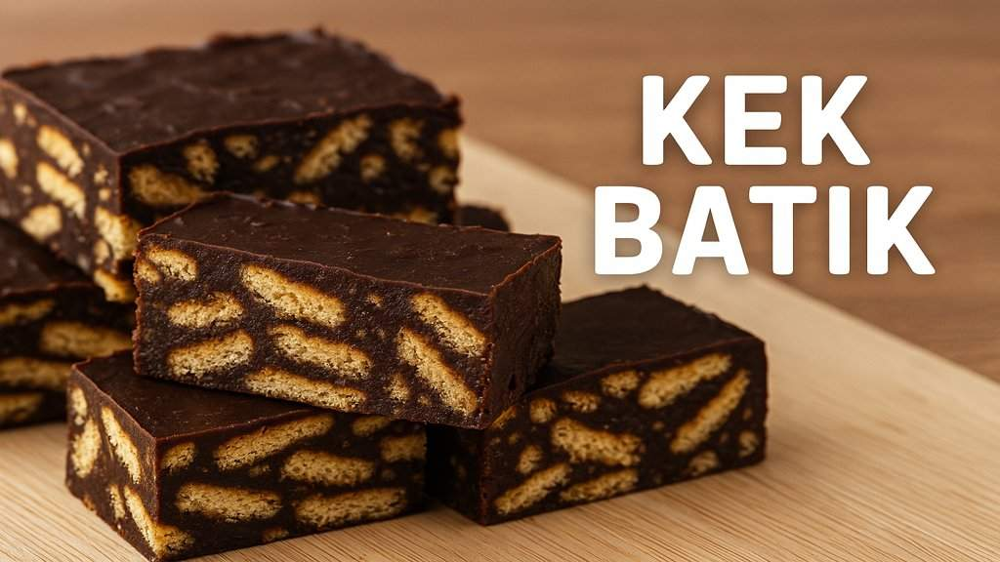

RESIPI CHE NOM
KEK BATIQUEE
cookies

Bahan-bahan
- 1 pek biskut Marie
- 1 pek biskut Marie
- 200g serbuk Milo
- 3 sudu besar serbuk koko, ayak
- 3/4 tin susu pekat
CARA MEMASAK
- Lapik loyang dengan kertas parchment atau kertas baking supaya apabila sejuk nanti mudah dikeluarkan. Che Nom guna loyang berukuran 8"x8".
- Potong butter kepada kiub. Panaskan butter di dalam periuk dan di atas api sederhana sehingga cair.
- Masukkan serbuk milo, susu pekat dan serbuk koko. Kacau sehingga pekat sebati.
- Susun biskut Marie dalam loyang kemudian sendukkan adunan coklat dan sapu rata sebagai lapisan atas.
- Susun berselang seli lapis biskut Marie dan adunan coklat sehingga habis.
- Sejukkan di dalam peti ais semalaman. Keluarkan dan potong untuk dihidangkan.
cookies